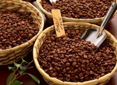
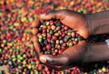

Сорта кофе из Южной Америки
Арабика Боливия (Arabica Bolivia)

- Кофе имеет шелковистый сливочный вкус, интенсивно пряные ароматы с нотами жасмина, персика, кедра и ванили. Богатый вкус с легкой кислинкой
абрикоса, черной смородины и красного винограда. Это один из лучших образцов классического кофе из Южной Америки, имеет яркую,
сочную кислинку и чистый вкус. Характерный вкус для этого типично южноамериканского кофе обусловлен влажным методом обработки зерен. Кофе
пользуется большой популярностью в США и Канаде.
Арабика Бразилия Сантос (Arabica Brazil Santos)
- Сантос - это самый известный сорт бразильской арабики. Вкус насыщенный, умеренно-кислый, со сладкими нотками и оттенками сухих специй.
Аромат тонкий, сбалансированный. Напиток, полученный из этого сорта, имеет мягкий, приятный вкус. Сантос придает напитку мягкий аромат, вкусную
насыщенность и умеренную кислотность. Бразилия Сантос отличается особой мягкостью, стабильностью вкуса, кофейным характером, что не имеет никаких
посторонних оттенков. Отмечается баланс кислинки и горчинки.
- Сорт рекомендуется для тех, кто не любит экзотику, а предпочитает классический кофе. Хорошо подходит как компонент для получения кофейных смесей.
Размер зерен этого сорта является эталоном размера зерен для всех иных сортов.
Арабика Бразилия РВ (Arabica Brazil PB)
- Кофе Арабика Бразилия РВ - это кофе высокого качества. Чрезвычайно ароматный. Аромат зернышка peaberry обладает силой и насыщенностью
двух обычных. Вкус данного сорта душистый, со сладкими нотками и оттенками специй, стабильный, мягкий, с балансом кислинки и горчинки.
- Не случайно Бразилию называют второй родиной кофе. Производство кофе в этом государстве на треть удовлетворяет потребности человечества в
ароматном напитке.
- Сегодня в Бразилии кофе выращивают в 17 из 21 штата, однако на экспорт идет лишь выращенный в четырех из них (Парана, Сан-Паулу, Минас-Жерайс
и Эспириту-Санту).
Арабика Бразилия Желтый Бурбон (Arabica Brazil Yellow Bourbon)

- Один из лучших бразильских сортов кофе, названный по имени французского острова Бурбон в Карибском море. Этот сорт имеет чистый, нейтральный,
слегка сладковатый аромат, и насыщенный нейтральный вкус. Отличительная черта Бурбона - утонченный сладковато-горьковатый, немного маслянистый
вкус с легкой кислинкой, которая полностью отсутствует в обычном Сантосе.
- Настоящий Бурбон собирается из кофейных деревьев только в течение первых трех урожаев. Через четыре года зерна меняют свои характеристики и
становятся по вкусу аналогичными обычному Сантосу.
- Сорт Желтый Бурбон - уникальный сорт кофе, который не проходил никаких процедур скрещивания. Сорт сохранился в своем первоначальном виде,
именно в таком, в котором он был сотни лет назад в Эфиопии.
- Ягоды этого сорта имеют желтый цвет и кожура их тоньше, чем у других сортов кофе. Она позволяет солнечным лучам эффективно влиять на созревающие
ягоды и зерна, делая их особенно сладкими.
- Уникальный кофе, отличается невероятно сбалансированным и очень богатым вкусом. При правильной обжарке этот кофе очень сладкий на вкус, и его
можно пить без сахара.
Арабика Эквадор Галапагос (Arabica Ecuador Galapagos)
- Редкий и очень необычный сорт кофе, выращенный без использования химических средств. Кофе выращивается в крайне ограниченных
количествах. Благодаря поистине уникальным климатическим условиям и самобытным традициям сбора и обработки, этот кофе нельзя сравнить ни с одним
из известных сортов кофе. Имеет восхитительный аромат с нотками темного шоколада, хорошо сбалансированный; во вкусе - какао и карамель, приятная
цветочная кислинка. Ему присущи изысканный аромат и насыщенный вкус с мягким ореховым оттенком.
Арабика Галапагос Сан-Кристобаль (Arabica Galapagos San-Cristobal)
- Галапагос Сан-Кристобаль - редкий и особый сорт элитного класса. Небольшие объемы его производятся на острове Сан-Кристобаль Галапагосского
архипелага.
- В гористой части маленького острова Сан-Кристобаль выращивают превосходный кофе, достойный внимания специалистов и ценителей элитных сортов.
Сорт абсолютно натуральный и объединяет лучшие существующие ароматные компоненты. Кофе выращивается без применения каких-либо химических средств.
Обрабатываемый природными способами, экологически чистый кофе считается великолепным - настоящее сокровище для гурмана.
- Галапагос Сан-Кристобаль имеет восхитительный аромат, богатый вкус, характерную легкую горчинку с дымной ноткой и мягким ореховым тоном.
Арабика Колумбия Эксельсо (Arabica Colombia Excelso)
- Колумбия Эксельсо - это самый популярный в мире сорт кофе, с хорошо сбалансированным вкусом, имеет тонкий, приятный аромат с мягким фруктовым
привкусом и большей кислотностью, чем Колумбия Супремо. Гармоничный аромат, приятное послевкусие.
- Данный сорт кофе отличается прекрасным сочетанием кофейных качеств: вкуса, аромата, консистенции и цвета, который превращается в
солнечно-золотистый, когда в напиток добавляют немного молока или сливок. Легкая кислинка, присущая всем сортам колумбийского кофе присутствует
в напитке.
Арабика Колумбия Супремо (Arabica Colombia Supremo)
- Супремо в переводе с испанского - "великолепный". Этот кофе имеет прекрасный бархатный вкус, немного сладкий с небольшой приятной кислинкой
фруктового вина. Несомненно, кофе высочайшей пробы. Он сразу завоюет Ваше сердце богатым и ярким букетом вкусовых оттенков.
- Вкус и аромат данного сорта подходят для приготовления кофе самыми разнообразными способами.
Арабика Колумбия без кофеина (Arabica Colombia Decaf)
- Этот сорт отличается сбалансированным бархатным вкусом, имеет легкую кислинку и тонкий аромат. Сорт отличается приятным мягким богатым вкусом,
тонким ароматом, хорошей кислотностью. Кофе без кофеина сохраняет всю полноту вкусовых и ароматических качеств натурального кофе. Массовая доля
кофеина в нем не более 0,3% в пересчете на сухое вещество.
Арабика Колумбия Марагоджип (Arabica Colombia Maragogype)
- Изготавливается из крупных зерен колумбийской арабики, выращенной на высокогорных плантациях. Ручной сбор зерен и традиционная обработка делают
этот сорт кофе поистине драгоценным.
- Напиток, приготовленный из этого сорта кофе, обладает ярким насыщенным ароматом с оттенками топлёного молока и густым плотным вкусом с лёгкой
горчинкой.
- Гармоничный и насыщенный аромат кофе, настоящий кофейный вкус.
Арабика Перу (Arabica Peru)
- Перуанский кофе обычно имеет мягкую кислотность, насыщенный плотный вкус, незабываемое послевкусие. Очень нежный, тонкий аромат. Хорошо подходит
для любого способа приготовления.
- Благодаря своему приятному, но сдержанном вкусу, перуанский кофе считают отличной основой для бленда. Особенно часто его используют в блендах
темной обжарки и как основу для ароматизированного кофе. Но лучшие сорта перуанского кофе отличаются чрезвычайно утонченным, легким вкусом с
ванильно-ореховыми нотами. Этот кофе заслуживает признания как особый сорт.